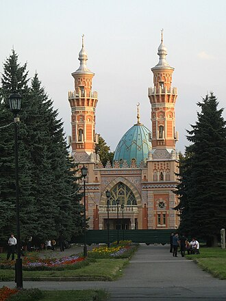

Pagpapakilala
La mosquée de Vladikavkaz se dresse sur la rive gauche du fleuve Terek à Vladikavkaz. Elle est de rite sunnite et d'obédience hanafite. Elle est également connue sous le nom de Mosquée Moukhtarov d'après le millionnaire azéri Mourtouza Moukhtarov (1855-1920) qui avait fait fortune dans le pétrole à Bakou et financé sa construction en 1900-1908, ayant fait don de 50 000 roubles sur les 80 000 roubles au total. L'architecte Józef Plośko a été inspiré par Al-Azhar et d'autres mosquées du Caire. Elle est inaugurée le 14 octobre 1908. Elle est fermée en 1934 et transformée en filiale du musée régional.
مسجد مُختاروف أو مسجد السُنّة هو مسجد تاريخي يقع على الضفة اليسرى لنهر تيريك في مدينة فلاديقوقاز عاصمة الكيان الفيدرالي الروسي أوسيتيا الشمالية.
The Sunni Mosque or the Mukhtarov Mosque is a historic mosque on the left bank of the Terek River in Vladikavkaz, Russia. The mosque owes its name to the Azerbaijani millionaire Murtuza Mukhtarov who financed its construction in 1900–1908. The architect Józef Plośko was inspired by Al-Azhar and other mosques of Cairo. Plośko was also the architect of Mukhtarov Palace in Baku. The mosque serves the Ossetian Muslim minority.
Muhtarov Camii ve ya Sünni Camii Rusya Federasyonu'na bağlı Kuzey Osetya Özerk Cumhuriyeti'nin başkenti Vladikavkaz şehrinde, Terek Irmağı'nın sol kıyısında yer alan tarihi bir cami. Cami adını, inşaat masraflarının çoğunu karşılayan Azerbaycanlı milyoner Murtaza Muhtarov'dan alır.
Masjid Katedral Mukhtarov adalah sebuah masjid sunni bersejarah yang berada di tepi kiri Sungai Terek, kota Vladikavkaz, Republik Ossetia Utara–Alania, Rusia. Masjid ini mendapatkan namanya dari donatur Azerbaijan, Murtuza Mukhtarov yang membiayai pembangunannya pada tahun 1900–1908. Arsitek Józef Ploshko terinspirasi dari Masjid Al-Azhar dan masjid lainnya di Kairo, Mesir. Ploshko juga mengarsiteki Istana Mukhtarov yang berada di Baku, Azerbaijan. Masjid ini melayani minoritas Muslim Ossetia.
مختاروف مسجد روس کا ایک مسجد جو Vladikavkaz, Russia میں واقع ہے۔
Die Sunnitische Moschee befindet sich in der Hauptstadt der russischen Republik Nordossetien-Alanien Wladikawkas.
La Mezquita Sunita o Mezquita de Vladikavkaz es una mezquita que se encuentra en la margen izquierda del río Terek, en Vladikavkaz. El telón de fondo de la mezquita se encuentra la cordillera del Cáucaso.
La Moschea Sunnita o Moschea Mukhtarov è una moschea storica posta sulla riva sinistra del fiume Terek, a Vladikavkaz. Il suo nome lo si deve al milionario azero Murtuza Mukhtarov, che finanziò la sua costruzione, tra il 1900 e il 1908. L'architetto Józef Plośko si ispirò alla moschea di al-Azhar e altre moschee del Cairo. Plośko fu anche l'architetto del Palazzo Mukhtarov a Baku. La moschea è utilizzata dalla minoranza islamica osseta.
A Mesquita de Mukhtarov é uma mesquita sunita em Vladicaucase, na margem esquerda do rio Terek, um dos símbolos da cidade. É um monumento de arquitetura de importância federal. Foi construída em 1900 - 1908.
Мече́ть Мухта́рова — суннитская мечеть во Владикавказе, на левом берегу реки Терек, один из символов города. Памятник архитектуры культурного наследия России федерального значения (№ 161410016990006). Построена в 1900—1908 годах.
Sa mapa
Mga dokumento at link
- Wikipédia — Français
- Wikipédia — العربية
- Wikipédia — English
- Wikipédia — Türkçe
- Wikipédia — Bahasa Indonesia
- Wikipédia — اردو
- Wikipédia — Deutsch
- Wikipédia — Español
- Wikipédia — Italiano
- Wikipédia — Português
- Wikipédia — 中文
- Wikipédia — Русский
- Wikidata — Q1973736
Datos: Wikidata (CC0), ina-update tuwing 3 buwan. Ang taon ay ang pinakamaagang alam na petsa ng pagkakatayo ng gusali: para sa gusaling naging moske kalaunan (gaya ng Hagia Sophia), ito ang taon ng orihinal na gusali. Mga larawan: Wikimedia Commons, ang may-akda at lisensiya ay nasa pahina ng bawat larawan.